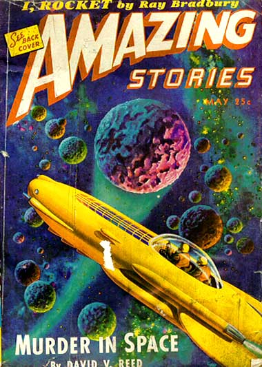

Au Centre d'Essais de Kummersdorf, lancement d'une fusée
expérimentale en présence du ministre de la Propagande Joseph Goebbels, du SS-Reichsführer Himmler, de Heinz
Kammler, SS-Gruppenführer et docteur ingénieur, et d'officiers supérieurs. La caméra de poursuite enregistre le
départ. Après développement et tirage du film, projection de démonstration et de critique devant les autorités.
Stupteur : un corps sphérique, que personne n'avait vu sur le terrain, monte en même temps que la fusée et
l'accompagne en tournant autour d'elle. On croit à un nouveau type d'engin ennemi et des renseignements sont
demandés ; mais les agents de l'amiral Canaris en Grande-Bretagne signalent que des phénomènes semblables se
produisent au-dessus des bases anglaises, et que les Alliés croient qu'il s'agit là de nouveaux engins venant
d'Allemagne Rapport adressé à l'Oberkommando der Luftwaffe, Durrant 1973.
Classement du projet Massey démarré en . L'agent double informateur est
dénoncé et exécuté.
Premiers vols d'essais des prototypes des inventeurs allemands
Screiver et Mietehe aux
complexes des montagnes de Harz.
Couverture de Amazing Stories ce mois-là

A Pîncota, Arad (Roumanie), un témoin déclare avoir vu un
appareil allemand volant bas et rester immobile en l'air durant 2 mn sans faire de bruit avant de poursuivre sa
route Gheorghe Lucaci < Hobana, Ion & Julien Weverbergh: UFO's
Behind the Iron Curtain.
Les 1ères fusées V-1 sont lancées contre Londres
depuis le nord-ouest de la France.
Près de Hastings (Sussex), Bill Steele observe des V-1 entourés dans leur progression par des disques.
Dans le Midwest (USA), un objet flamboyant
dont on rapporte l'atterrissage en de nombreux endroits "Fiery Object In Sky
Dazzles Midwest", The New York Times, 1944-08-19.
Le capitaine Alvah Reida rencontre un "foo-fighter" alors qu'il survole Sumatra à bord
de son bombardier B-29. Il le décrit comme une boule rouge lumineuse d'environ 2 m de diamètre. Le capitaine
Reida qui vole à 320 km/h à une altitude d'environ 4000 m tente de se dégager de la boule de lumière, mais
elle maintient sa position par rapport à l'avion avant de disparaître à grande vitesse.
A Mattoon (Illinois), plusieurs témoins (dont une
majorité de femmes) on voit un personnage regarder par les fenêtres comme s'il cherchait quelqu'un qu'il
connaissait de vue. Le personnage braque sur les témoins un objet et certaines femmes s'évanouissent. Le
personnage, très semblable à "Jack talons-à-ressort" décrit en et ,
part en laissant une odeur étrange et écoeurante FSR 61, 3Vallée, Jacques: 1988.
Dans la forêt de Kamensko à Blovice (Tchecoslovaquie),
Francois Panes, jeune homme de 18 ans, voit un objet en forme de cigare d'une longueur de 100 à 150 m,
éclairé en dessous. L'objet passe du jaune au rougeâtre alors que le soleil se couche durant les
de l'observation. L'objet a descendu durant 7 mn puis est remonté et est parti lentement
Phénomènes Spatiaux n° 15, 1968.
Le cargo cubain Rubicon est retrouvé au large des côtes de Floride, à peu
près dans le même réê que le Gloria Colite, 4 ans plus tôt. Il n'y a qu'un chien à bord et le
navire est en excellent état : il ne menace pas de sombrer. Toutes les affaires de l'équipage sont restées à
leur place. Seul, un canot manque et une haussière (corde d'amarrage) cassée pend à l'étrave. Ce mois-là,
d'après les archives de la NOAA, un terrible ouragan avec des vents atteignant
les 250 km/h a ravagé la région. L'amarre brisée aurait alors probablement maintenu une ancre qui s'était brisée
lors de la tempête et l'équipage s'embarqua selon toute vraissemblance dans le canot de sauvetage manquant,
avant d'être emporté par l'océan déchaîné.
Le lieutenant Ed Schlueter, un jeune, grand et
compétent pilote de Oshkosh (Wisconsin), décolle dans son chasseur depuis Dijon (France) pour une mission de routine du 415ᵉ Escadron de Chasseurs Nocturnes :
scruter le ciel à la recherche d'avions allemands à abattre (il a déjà fait cela quelques fois et a été décoré
pour cela). Avec lui se trouve le lieutenant observateur radar Donald J. Meiers, ainsi que le lieutenant Fred
Ringwald, officier de renseignement de l'escadron, volant en tant qu'observateur. Le trio comme sa recherche,
parcourant le ciel nocturne plutôt dégagé, avec seulement quelques nuages et un quart de Lune, allant de chaque
côté du Rhin au Nord de Strasbourg. A un moment Ringwald dit : Je me demande ce
que sont ces lumières, là-bas au-dessus des collines. Probablement des étoiles répond Schlueter.
Non, je ne pense pas, répond Ringwald. Es-tu sûr que ce n'est pas un reflet chez nous ? Tout à fait.
Ringwald se souvient -- il n'y a pas de collines à cet endroit. Mais les "lumières" brillent toujours — 8 ou 10
alignées — des boules de feu orange traversant l'air à une vitesse ahurissante. Schlueter les voit alors loin au
bout de son aile gauche. Il vérifie immédiatement par radio avec les stations radar alliées. Il n'y a là
personne d'autre que vous, répondent-elles. Vous êtes fous ? Et aucun avê ennemi n'est non plus
visible sur le radar de Meiers. Schlueter vire vers les lumières, prêt à l'action. Celles-ci disparaîssent, puis
réaparaissent plus loin. plus tard elles semblent s'amincir et disparaissent pour
de bon. Les aviateurs poursuivent leur mission et détruisent 7 trains de fret derrière les lignes allemandes.
Lorsqu'ils reviennent à Dijon, ils décident de garder l'histoire pour eux pour le moment McClure, K.: Fortean Studies 7, 2001.
Une observation typique de foo-fighters.
Le lieutenant pilote Henry Giblin de Santa
Rosa (Californie) et le lieutenant observateur radar Walter Cleary de Worcester
(Massachusetts) volent à une altitude de 1000 pieds lorsqu'ils voient une énorme boule de lumière rouge à 1000
pieds au-dessus d'eux, se déplaçant à 200/h. Les hommes pensent avoir mangé quelque chose qui ne leur a pas
convenu et ne courent pas rapporter leur experience McClure, K.: Fortean Studies 7, 2001.
Dans un article intitulé La Mystérieuse Boule Flottante est une Nouvelle Arme
Allemande, le New York Times rapporte : QS Suprême, Corps Expeditionnaire Allié, 1ê Déc - Une
nouvelle arme Allemande a fait son apparition sur le front aérien occidental, cela a été révélé aujourd'hui. Les
pilotes de la Force Aérienne Américaine rapportent leurs rencontres avec des sphères couleur d'argent dans le
ciel du territoire Allemand. Les spheres sont rencontrées seules ou en groupes. Parfois elles sont
semi-translucides.
David L. McFalls, un pilote du 415ᵉ escadron de
chasse américain, ainsi qu'un radariste rentrent de mission au-dessus de Haguenau,
lorsqu'ils voient 2 grandes lumières orange rejoignant à grande vitesse leur altitude de vol de 3500 m (10 000
pieds). McFalls note : A avons observé 2 lumières quitter le sol se diriger vers nous. Une
fois à notre altitude, elles se sont stabilisées et sont restées derrière ma queue. Les lumières ont
l'apparence de grandes lueurs orange. Après être restées avec l'avion, elles se
détachent et virent au loin, volant de manière parfaitement contrôlée, et s'en vontMcClure, K.: Fortean
Studies 7, 2001. Le pilote aura piqué pour tenter de les distancer, mais sans succès Lore, Gordon I. R. Jnr., et Deneault, Harold H., Jnr., 'Mysteries of the Skies; UFOs in Perspective' p. 116 Prentice-Hall, New Jersey 1968.
McFalls est témoin d'un autre phénomène, en compagnie de son observateur
radar, le lieutenant Ned Baker de Hemat (Californie). Toujours à 3500 m (10000 pieds)
d'altitude, une boule lumineuse rouge fonce vers l'avion. Le pilote raconte : Soudain, elle prit la forme
d'un avion, qui, après avoir exécuté un virage très serré, descendit en piqué, puis disparutMcClure, K.: Fortean Studies 7, 2001. L'armée pense à une arme secrète
allemande. Pourtant, après la fin de la guerre, les pilotes allemands affirmeront avoir croisé des phénomènes
similaires.
Le journaliste de l'AP Bob Wilson se trouve avec le 415ᵉ escadron pour enquêter sur les
foo fighters. Il interroge les hommes jusqu'à
du matin, et paraît îemain.
A Ploiesti (Roumanie), la rafinerie Vega est en feu
après un bombardement et un objet jaunâtre et aigü est observé venant du Nord. L'objet laisse une traînée semblable
à la vapeur d'un avion, mais est plus court et vibrant. Sa vitesse est 3 à 4 fois supérieure à celle des appareils
souvent observés au-dessus de la ville. Il n'y a pas de bruit et l'objet tourne autour de la zone bombardée puis
disparaît d'où il est venu. L'observation durant Hobana, Ion & Julien Weverbergh: UFO's
Behind the Iron Curtain.
Durant une mission en Roumanie pour bombarder les raffineries exploitées par les
Allemands, Boris Surikov et son commandant, le major Bajenov, volent à une altitude de 5000 m au-dessus du sud-ouest
de l'Ukraine lorsqu'ils rencontrent un appareil particulièrement inhabituel. En face de l'avion, un grand objet
en forme d'ellipse volait dans notre direction (...) On avait lu dans les journaux des choses sur les nouvelles
armes allemandes, mais on ne vit rien de semblable. Ce qui se passa fut que notre énorme avion de 14,5 tonnes
commença à être secoué, la pression d'huile augmenta, et loêe m'appuyait sur la fenêtre je ressentis une forte
décharge électrostatique. Je craignais que l'avion prenne feu. Il nous dépassa et disparu, mais notre avion était
toujours affecté : je regardais les ailes, couvertes de décharges électriquesInterview de Surikov par les producteurs de télévision anglais Lawrence Moore et Livia Russel à Moscou en 1994.
Harry S. Truman est élu vice-président des Etats-Unis.
Les célèbres Messerschmitt Me-262 biréacteurs allemands forment des escadrilles de chasse opérationnelles
alors que les Alliés ne leur opposent encore aucun avion à réaction.